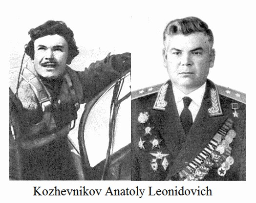

A.L.Kozhevnikov sinh ngày 12 tháng 3 năm 1917 tại làng Bazaikha (nay thuộc thành phố Krasnoyarsk), trong một gia đình nông dân. Ông tốt nghiệp trường cao đẳng nông nghiệp Krasnoyarsk, làm việc như một nhân viên trắc địa trong quá trình xây dựng nhà máy chế biến gỗ Krasnoyarsk. Kể từ năm 1938, tham gia Hồng quân Liên Xô. Năm 1940 ông tốt nghiệp khóa huấn luyện tại phi trường hàng không quân sự Bataisk và trở thành giảng viên.

Từ tháng 6 năm 1941 Trung sĩ A.L. Kozhevnikov chiến đấu trong quân đội. Sau đó trở về trường hàng không quân sự Bataisk. Năm 1942, ông tiếp tục ra mặt trận chiến đấu. Vào tháng năm 1945, là Trung đoàn phó trung đoàn cận vệ 212 (sư đoàn không quân cận vệ 22, tập đoàn không quân 2, phương diện quân Ukraina 1). A.L. Kozhevnikov đã thực hiện 211 phi vụ tấn công, trinh sát, yểm hộ máy bay ném bom, hỗ trợ cho lực lượng bộ binh. Sau khi trải qua 62 trận chiến trên không, tự mình bắn hạ 25 máy bay kẻ thù và 2 cùng với các đồng đội. Phá hủy rất nhiều trang thiết bị khác nhau của kẻ thù trên mặt đất.
Ngày 27 tháng 6 năm 1945 ông đã được trao danh hiệu Anh hùng Liên Xô cho lòng can đảm và dũng cảm thể hiện trong các trận chiến với kẻ thù.
Năm 1950 ông tốt nghiệp Học viện Không quân, năm 1958 - Học viện Quân sự Bộ Tổng tham mưu. Trung tướng Không quân. Tác giả của nhiều cuốn sách.
Ông đã được trao Huân chương Lenin, huân chương Cờ đỏ (năm lần), huân chương Alexander Nevsky, huân chương Chiến tranh thế giới hạng nhất, huân chương Sao đỏ (ba lần); nhiều huy chương và giải thưởng của nước ngoài.